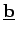
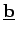

Inhalt Index DeskTop Bronstein

 Lineare Algebra Matrizen Rechenoperationen mit Matrizen Multiplikation zweier Matrizen
Lineare Algebra Matrizen Rechenoperationen mit Matrizen Multiplikation zweier Matrizen


Für zwei Vektoren  und die als einspaltige bzw. einzeilige Matrizen dargestellt werden können, gibt es bei der Matrizenmultiplikation die folgenden zwei Möglichkeiten der Produktbildung:
und die als einspaltige bzw. einzeilige Matrizen dargestellt werden können, gibt es bei der Matrizenmultiplikation die folgenden zwei Möglichkeiten der Produktbildung:
Ist  vom Typ (1,n) und  vom Typ (n,1), dann ist das Produkt vom Typ (1,1), also eine Zahl. Man spricht dann vom Skalarprodukt zweier Vektoren.
vom Typ (1,n) und  vom Typ (n,1), dann ist das Produkt vom Typ (1,1), also eine Zahl. Man spricht dann vom Skalarprodukt zweier Vektoren.
Ist dagegen  vom Typ (n,1) und vom Typ dann ist das Produkt vom Typ (n,m), also eine Matrix. Man spricht in diesem Falle vom dyadischen Produkt zweier Vektoren.
vom Typ (n,1) und vom Typ dann ist das Produkt vom Typ (n,m), also eine Matrix. Man spricht in diesem Falle vom dyadischen Produkt zweier Vektoren.
 |
(4.24) |
Das Kommutativgesetz der Multiplikation gilt hier im allgemeinen nicht. Daher ist die Reihenfolge von und exakt einzuhalten. Bei Vertauschung der Reihenfolge, also würde sich ein dyadisches Produkt ergeben.
| (4.25) |
vom Typ (n,m). Auch hier gilt das Kommutativgesetz der Multiplikation im allgemeinen nicht.